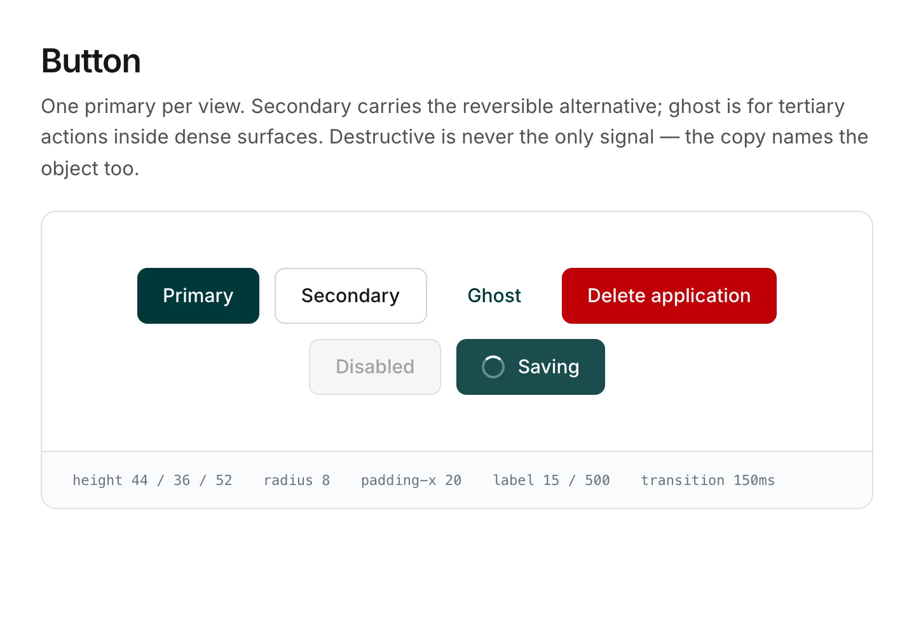
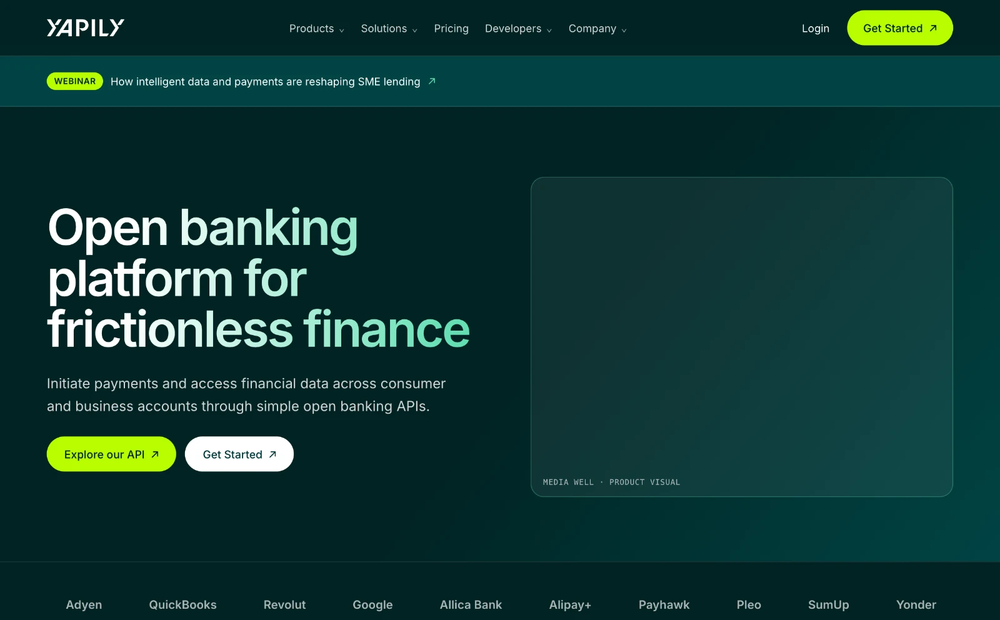

Design systems at Yapily
Custard, Mark and Yapily UI, three design systems on one shared token layer, and the governance model that decided what got into them. I designed the first versions of the systems and built the governance jointly with the frontend lead.
AT A GLANCE
One design system would have made all three products worse. Custard has to be white-label and restrained, Yapily UI dense and operational, Mark expressive. So we separated the components by product context and shared only the layer that genuinely needed consistency: the tokens.
The rule underneath is three tiers. Primitives, semantic aliases, component tokens. And if a component token only repeats an alias, it gets deleted.
Custard is the one worth reading. It shares components with Yapily UI but inherits no brand, which is what lets a customer theme the flow without editing a component. For a white-label product, inheriting the vendor’s brand is a bug.
Accessibility is encoded rather than reviewed. Contrast requirements sit in the tokens, so the accessible choice is the default and you have to work to get it wrong.
Three systems, one token layer
We ran three design systems instead of one, and that was deliberate. A single system would have forced three very different surfaces into one set of compromises, and whichever surface was least like the others would have come off worst.
Three separate Figma libraries sat on top of a shared token library. Tokens were maintained as Figma variables and mirrored in code, with the component library documented in Storybook. Same primitives, different components, and that split is what made three systems cheaper than one compromised system, rather than three times the work.
Custard: hosted pages
White-label, and minimal by design. Customers themed it themselves, logo, typeface, and brand colours applied mainly to buttons and links, with a choice of light, dark or system-matched appearance. Everything else stayed locked. When customers control the surface, the system’s job is to expose as little as possible while still reading as their product.
Mark: website
Restyled annually with distinctive, playful work, larger heading spacing, more expressive layout. Separated from the product systems, it moved at its own pace.
Yapily UI: tools
Dense by nature, analytics and data-heavy pages where vertical rhythm is tight and information density is the point. Its atoms and molecules were built for that.
Three tiers, and a rule about deleting
The token layer is structured rather than flat, which is what let three systems share it without any of them inheriting decisions they didn’t want.
The governing rule was about removal, not addition: a token that resolves to the same value as an existing one gets deleted, not aliased. Two names for one value is how a system ends up with forty-six hard-coded colours, which is where we started. The consolidation took that to sixteen primitives and eleven semantic aliases.
What we deliberately didn’t share
The exclusions did more work than the inclusions. Each of these was proposed as a shared token at some point and rejected for a reason specific to who uses the surface and for how long.
Mark’s lime
Right on a marketing page someone looks at for ninety seconds. Wrong in a tool an operations person has open for six hours. At that duration a saturated accent stops being energetic and starts being fatiguing.
Yapily UI’s eight greys
Dense data needs eight steps to separate row, header, hover, selected, disabled and three borders. Marketing needs three. Pushing eight onto Mark would have handed it a precision it has no use for.
Mark’s gradients
Expressive headings and gradient fills belong on a site that gets restyled annually. Letting them into the shared tier would have made flat console surfaces a matter of restraint rather than a matter of what exists.
Custard shares components and inherits no brand
Custard is the odd one out, and the architectural claim of the whole system. It takes atoms, molecules and layout from the shared library, and takes no brand values at all. Every brand slot is empty until a customer fills it. Yapily’s own colours are a preset in that layer, not a default underneath it.
Which is why the Hosted Pages configurator works. A customer sets four values and every screen in the flow re-themes, because there was never a Yapily colour buried in a component to override. Building it the other way: a branded system with customer overrides layered on. Is how white-label products end up with a logo that changes and a button that doesn’t.
Accessibility encoded in the tokens
Status colours are defined as pairs, not single values. Each status has a saturated accent for bars, icons and borders, and a darkened partner for text, because the accent that reads correctly as a 6px bar fails 4.5:1 as 13px type on its own tint. Naming them as a pair means a designer can’t pick the wrong one by reaching for the obvious value.
Dark mode works the same way. Deep teal is the primary action colour in light mode and fails on black, so mint is the dark-mode primary. Declared in the token layer rather than left as a judgement call per component. Both decisions move accessibility from something checked at the end to something you have to work to get wrong.
Inside Yapily UI
A working reference for all three systems, palettes, semantic tokens, type, spacing, elevation and components.

A working reference for all three systems, Yapily UI, Custard and Mark. As live markup with their token specs. Switch between them in the header.
Open the interactive referenceMark in action
The marketing site is where the expressive tier earns its keep, the gradient headings, the lime accent and the wide type scale that were deliberately kept out of the shared layer.

The homepage rebuilt from Mark components rather than screenshotted. Same tokens, same buttons and cards as the Mark tab in the reference.
Open the homepageContribution and governance
The gate was evidence rather than seniority.
Proposal
Anyone could propose a component; in practice proposals came from design and frontend. The proposer produced a simple mockup, enough to evaluate, not a finished spec.
Validation
The component was tested for usability and accessibility before it was eligible for review, a mix of guerrilla testing and external platforms: Maze for unmoderated usability, Testbirds for broader usability and accessibility coverage.
Documentation
The proposer wrote the component up with its use cases. Defining where a component shouldn’t be used mattered as much as where it should.
Review
Ad-hoc meetings with the frontend team and other designers. Bringing frontend in at proposal stage rather than at handoff surfaced implementation cost while the design was still cheap to change.
Approval
Two stages: design-side first approval, then a group decision with the frontend team.
Adoption
Approved components entered the shared library.
Where validation sat
Validation sat before review, not after. That single ordering decision changed what review meetings were about. Teams debated evidence rather than taste, and the discussion moved faster because there was less to be subjective about.
Reach
Components from these systems were used across the marketing website and its landing pages, demo tools, internal tools, hosted pages, and customer-facing tools.
Versioning and deprecation
We never formalised versioning or deprecation. What I’d put in place now: semantic versioning, so someone has to consciously decide whether a change is breaking; deprecate rather than delete, with the replacement and migration path named; a changelog written for humans; Figma and code versioned in step so designers can tell what’s actually in production; and release notes pushed to Slack rather than a wiki nobody opens.